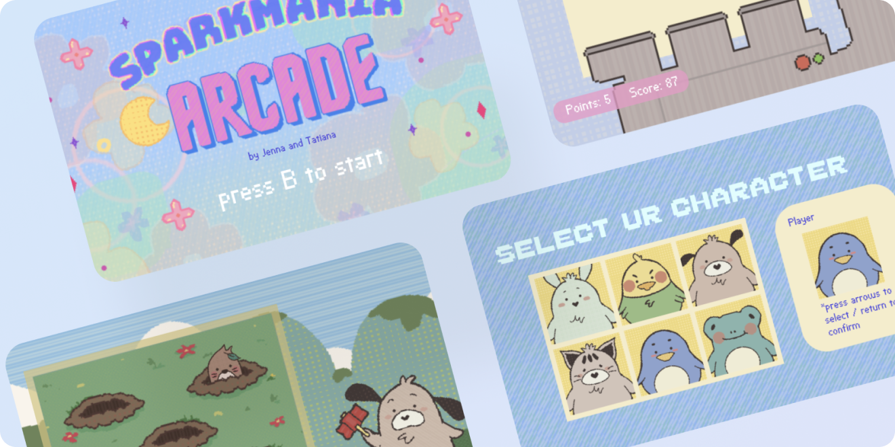
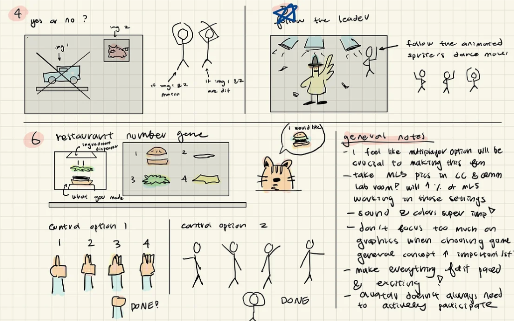
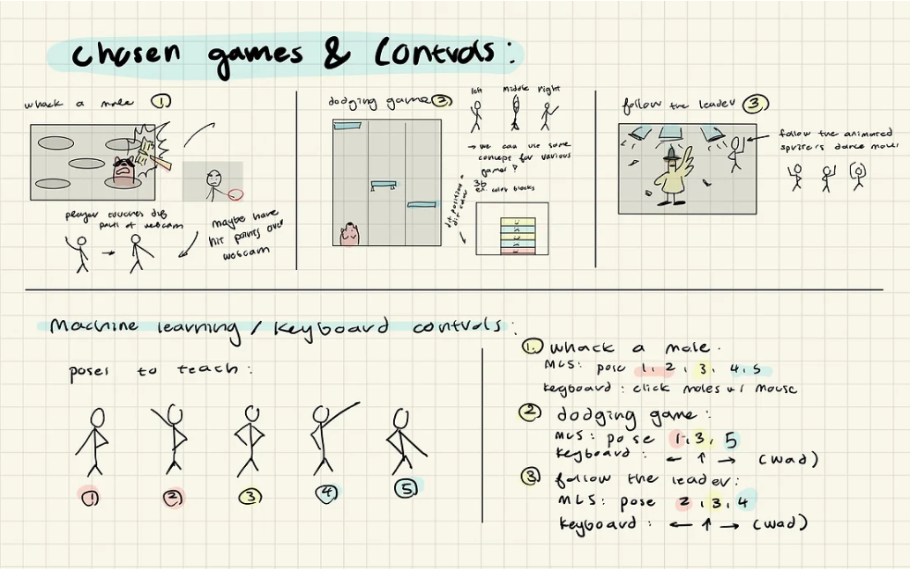
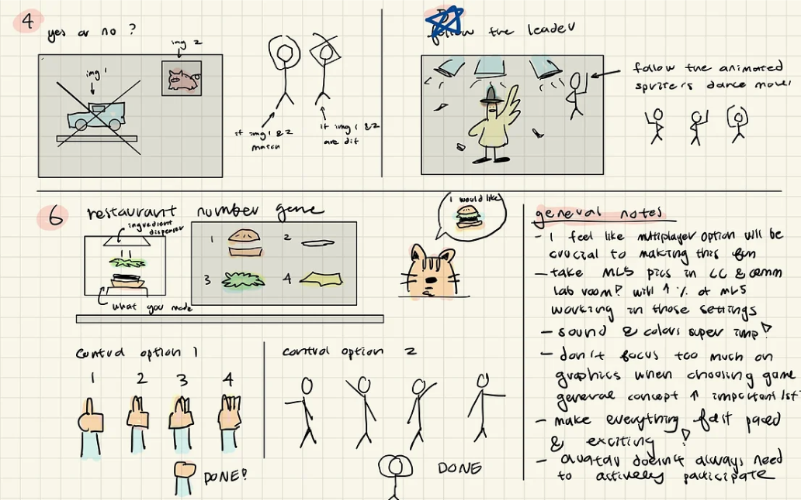
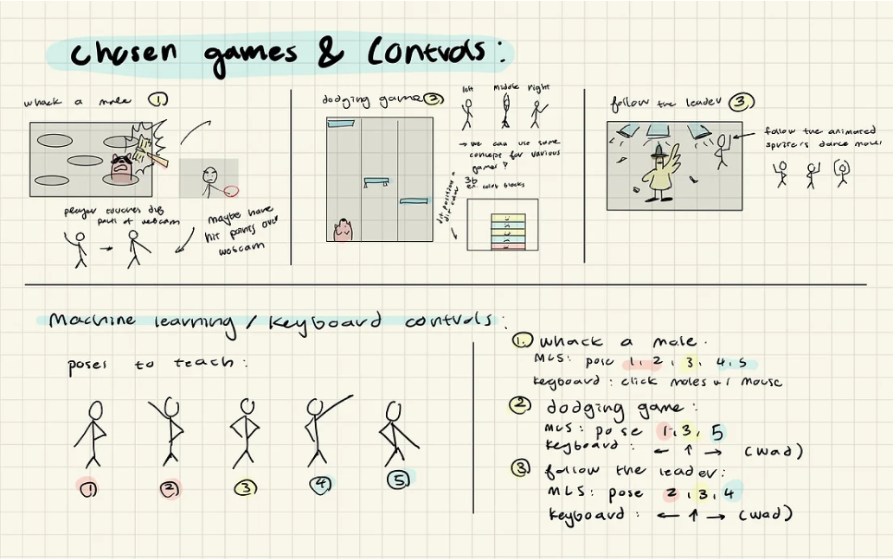
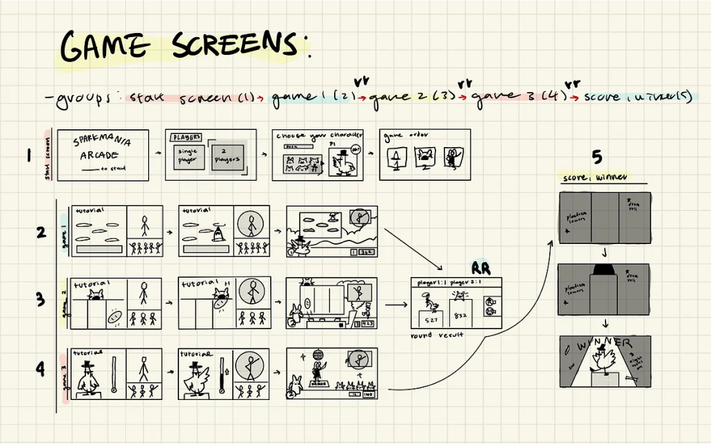
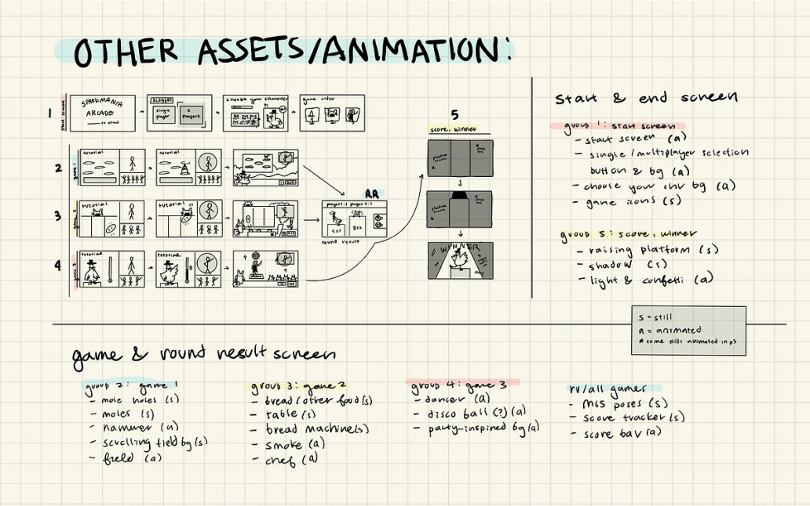
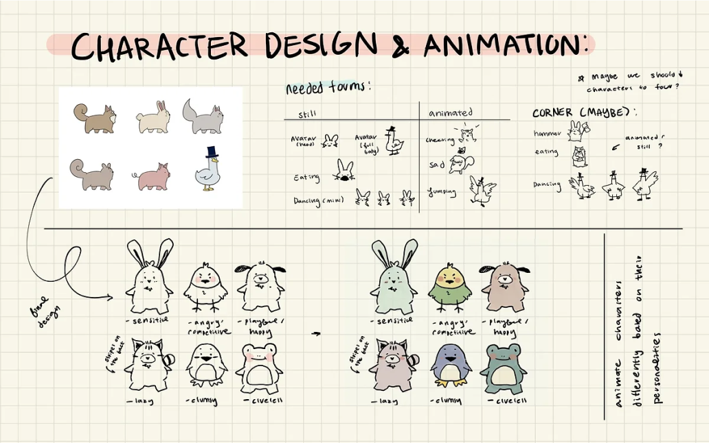
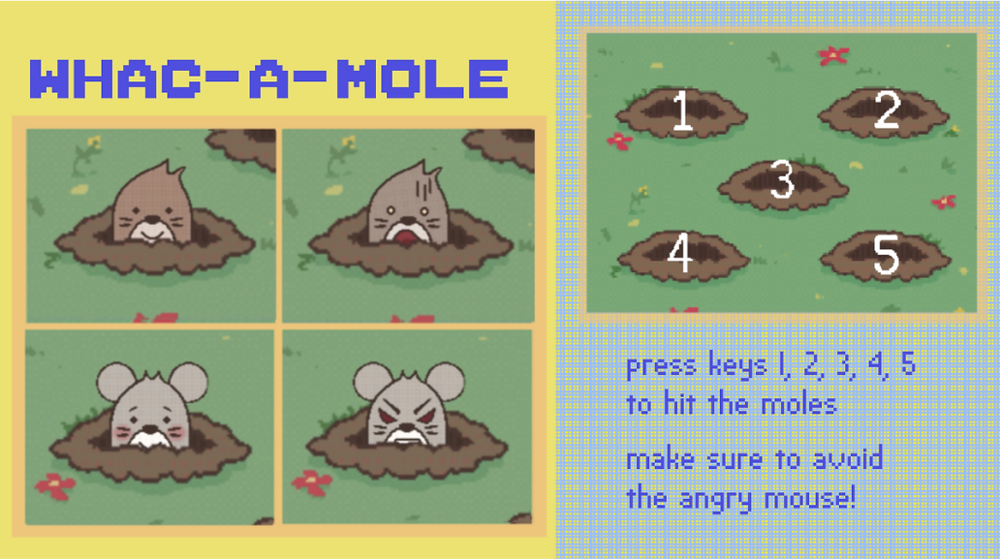
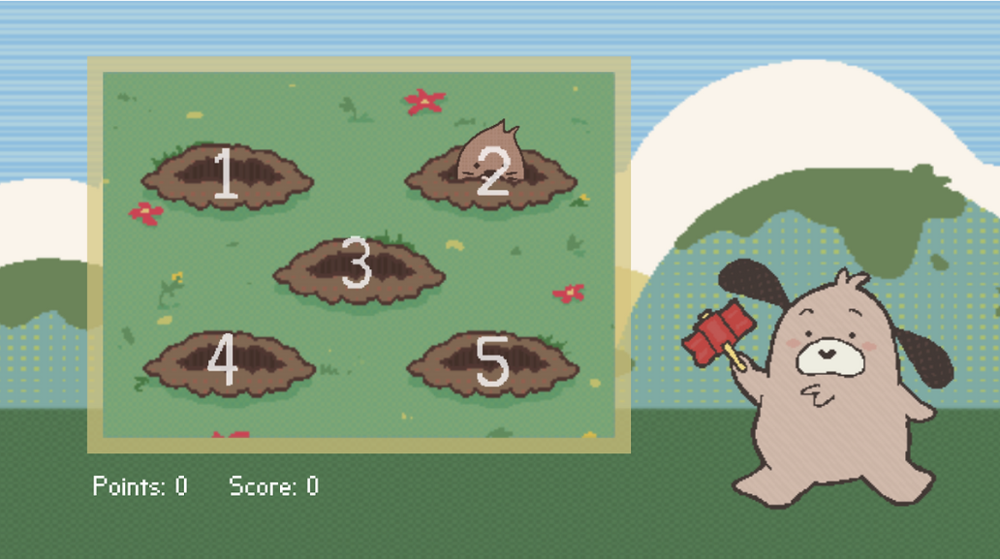

Sparkmania Arcade
UI design • Web development
Introduction
Sparkmania arcade is an online arcade with three mini-games: wack-a-mole, bread eater, and follow the leader. There are six different selectable characters and you get a score based on your performance every round.
Team
Jenna Han, Tatiana Jimanez
Role
UI designer, Web Developer
Timeline
Nov 2021 - Dec 2021 (one month)
Inspiration
We wanted to evoke feelings of nostalgia, excitement, slight
frustration, and fun with this game. As we were Nintendo fans growing up,
we wanted our arcade to have an old, retro-style aesthetic.
We started off by finding some game designs we liked and adding them to our mood board.
Game Ideas and Breakdown
We came up with some mini-game ideas. We originally wanted the characters to be controllable by body movements as we thought it would make the game more engaging for players. Unfortunately, this caused the games to be too laggy for our devices, but this restriction helped us come up with ideas!
 



We chose the whack a mole, dodging, and follow the leader games. We ended
up replacing the doing game with the bread eater game, which has the same
logic but with different assets. In order to make the coding process easier,
we broke down the games into their logic, and how we may implement them through code.
Organizationn
We created low-fidelity wireframes for each game screen and broke down the assets we would need to create for each scene.
 
We chose the whack a mole, dodging, and follow the leader games. We ended
up replacing the doing game with the bread eater game, which has the same
logic but with different assets. In order to make the coding process easier,
we broke down the games into their logic, and how we may implement them through code.
Assets
We decided on anthropomorphic animals for the characters. We decided to give these characters different personalities in order to make the players more attached to them.
User Testing
We user-tested our game with other students. The most common feedback we got was that the game controls were difficult to memorize. In order to solve this issue, we decided to add controls to the actual game rather than just the tutorial page for a few seconds. This would give the users time to familiarize themselves with the game.
 Reflection
This was my first large-scale coding project and it was really fun to be able to create mini-games similar to what I played as a child. We did a lot of sketching and ideating for the project, and I feel like this made the actual coding and drawing process a lot easier, and gave the arcade a more consistent style. We were able to add elements of interactivity to our project by using a lot of sound effects, animated texts, and animated characters.